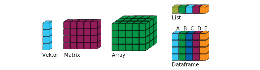
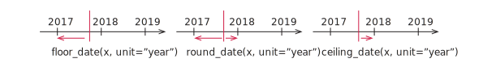

1e5 / 33[1] 3030.303pi %% 3[1] 0.14159271 / 3 + 1 / 2[1] 0.83333336^8[1] 1679616Kurz und (fast) schmerzlos
| Operator | Beschreibung | Beispiel |
|---|---|---|
+ |
Addieren | 4 + 5 = 9 |
- |
Subtrahieren | 5 - 4 = 1 |
* |
Multiplizieren | 4 * 4 = 16 |
/ |
Dividieren | 1 / 2 = 0.5 |
^ |
Potenzieren | 2^0.5 = 1.414214 |
%% |
Modulo bilden | 7 %% 5 = 2 |
1e5 / 33[1] 3030.303pi %% 3[1] 0.14159271 / 3 + 1 / 2[1] 0.83333336^8[1] 1679616x <- 32
y <- 7 / 8
x * y[1] 28<- (Tastenkombination alt + -)X <- pi
x <- 2
a.b <- 100
x * X * a.b[1] 628.3185pi ist eine vorbelegte Variable mit Näherung für \(\pi\)Zuweisung nach rechts
33 -> x
x[1] 33<- funktioniert auch so -> rum
Es geht aber auch traditionell
x = 200
x[1] 200=
| Datentyp | Literale |
|---|---|
| logical | TRUE, FALSE |
| integer | 5L, 125L |
| double | 1, 1.75, 1e10 |
| character | "Hello World!" |
double
| Konstante | Bedeutung |
|---|---|
Inf und -Inf |
Unendlich und minus Unendlich |
NaN |
Rechenoperation ergibt keine Zahl, z.B. \(\sqrt{-1}\) |
NULL |
Ein leeres Objekt |
NA |
Unbekannter Datenwert (Not Available) |
| Funktionen | Beschreibung |
|---|---|
sin(x), cos(x), tan(x), … |
Trigonometrische Funktionen |
abs(x), sqrt(x) |
Absolutwert, Wurzel |
log(x), exp(x) |
Natürlicher Logarithmus und Exponentialfunktion |
log2(x), log10(x) |
Logarithmus mit anderen Basen |
Beispiele
exp(1)[1] 2.718282log2(4096)[1] 12
| Funktion | Bedeutung |
|---|---|
as.numeric(x) |
Konvertiert in eine Zahl |
as.character(x) |
Konvertiert in eine Zeichenkette |
as.logical(x) |
In Wahrheitswert konvertieren |
3 * as.numeric("1.81")[1] 5.43as.character(pi)[1] "3.14159265358979"as.logical(0)[1] FALSEas.logical(0.1)[1] TRUE
| Operator | Bedeutung |
|---|---|
a < b, a <= b |
Kleiner und kleiner gleich |
a > b, a >= b |
Größer und größer gleich |
a == b, a != b |
Exakt gleich und nicht gleich |
near(a, b) |
Fast gleich |
is.na(x) |
Test of x gleich NA |
| Verknüpfung | Bedeutung |
|---|---|
a & b |
Logisches und |
a | b |
Logisches oder |
!a |
Negation |
NA == 10[1] NAis.na(NA)[1] TRUEis.na(10)[1] FALSEpi >= 3.14[1] TRUEpi != 1[1] TRUEas.character(3 * 9 + 1) == 28[1] TRUETRUE | FALSE[1] TRUETRUE & FALSE[1] FALSE!FALSE[1] TRUEAchtung
sqrt(2) ^ 2 == 2[1] FALSE1 / 49 * 49 == 1[1] FALSE\(\rightarrow\) Rundungsfehler, Computer rechnet mit (grob gesagt) 15 Nachkommastellen
Überprüfung in R
near(sqrt(2)^2, 2)[1] TRUEnear(1/49*49, 1)[1] TRUE
| Funktion | Beschreibung |
|---|---|
paste0(...) |
Verbindet mehrere Werte zu Character |
paste(..., sep = " ") |
Wie paste0 aber mit Trennzeichen |
signif(x, digits = 6) |
Rundet auf Anzahl von signifikanten Stellen |
round(x, digits = 0) |
Runden auf Anzahl von Stellen |
paste(1, 2, 3, 4, 5, 6)[1] "1 2 3 4 5 6"paste(1, 2, 3, 4, 5, 6, sep = ", ")[1] "1, 2, 3, 4, 5, 6"paste0(1, 2, 3, 4, 5, 6)[1] "123456"signif(9283649, 4)[1] 9284000paste0("pi=", round(pi, digits = 4))[1] "pi=3.1416"round(x, digits = 0)Funktion round besitzt Parameter x (die Zahl die gerundet werden soll) und einen optionalen Parameter digits (Anzahl der Stellen). Wird digits nicht angegeben, dann verwendet R den Wert 0. Beim Funktionsaufruf kann man den Namen des Parameters weglassen (kürzer) oder angeben (meist besser zu verstehen).
round(pi)[1] 3round(pi, 1)[1] 3.1round(pi, digits = 2)[1] 3.14`paste(..., sep = " ")Der Funktion paste können beliebig viele Parameter übergeben werden. Der Name des optionalen Parameters muss angegeben werden.
paste(1, 2, 3)[1] "1 2 3"paste(1, 2, 3, 4, 5, 6, "$")[1] "1 2 3 4 5 6 $"paste(1, 2, 3, 4, 5, 6, sep = "$")[1] "1$2$3$4$5$6"

| Datenstruktur | Beschreibung |
|---|---|
| Vektor | Reihe von Elementen mit gleichem Datentyp |
| Matrix | Wie Vektor aber mit Zeilen und Spalten |
| Array | Wie Matrix aber beliebig viele Indizes |
| List | Wie Vektor aber verschiedene Datentypen |
| Dataframe | Liste, jedes Element ein Vektor, Spalten haben Namen |
→ Dataframe = Datensatz einer Erhebung
Für uns wichtig
→ Hier nur die Dinge, die wir auch benötigen
| Funktion | Beschreibung |
|---|---|
a:b |
Erzeugt einen Vektor von a bis b mit Inkrement 1 |
c(x1, x2, x3) |
Erzeugt einen Vektor mit den Werten x1, x2, x3 |
seq(a, b, by = inc) |
Erzeugt einen Vektor von a bis b mit Inkrement inc |
seq(a, b, length.out = n) |
Erzeugt einen Vektor von a bis b mit n Elementen |
rep(x, times = n) |
Hängt das Array oder die Zahl x n-mal hintereinander |
rep(x, each = n) |
Wiederholt jedes Element in x n-mal |
a:b wie in Matlab (aber kein 1:0.1:2)1:-6 # Geht auch rückwärts[1] 1 0 -1 -2 -3 -4 -5 -6c("A", "B", "C", 1:3) # Typkonvertierung automatisch[1] "A" "B" "C" "1" "2" "3"seq(1, 5, by = 0.7) # Zweiter Wert nicht unbedingt dabei[1] 1.0 1.7 2.4 3.1 3.8 4.5seq(1, 5, length.out = 6) # Inkrement automatisch[1] 1.0 1.8 2.6 3.4 4.2 5.0rep(c(4, 7, 1, 1), times = 3) # Drei mal hintereinander [1] 4 7 1 1 4 7 1 1 4 7 1 1rep(c(4, 7, 1, 1), each = 3) # Jedes Element drei mal [1] 4 4 4 7 7 7 1 1 1 1 1 1x <- 1:5
y <- 5:1
x + y[1] 6 6 6 6 61 + x[1] 2 3 4 5 6x * y[1] 5 8 9 8 5sqrt(x)[1] 1.000000 1.414214 1.732051 2.000000 2.236068→ Ausführung Elementweise
a <- 0:8
b <- c(1, 11)
c <- 99Damit
a + bWarning in a + b: longer object length is not a multiple of shorter object
length[1] 1 12 3 14 5 16 7 18 9a %% 2 == 0[1] TRUE FALSE TRUE FALSE TRUE FALSE TRUE FALSE TRUEa[a %% 3 == 0][1] 0 3 6c[1][1] 99
| Funktion | Bedeutung |
|---|---|
c(a, b, ...) |
Vektor erzeugen (geht auch mit Vektoren) |
length(a) |
Länge eines Vektors |
sum(a), prod(a) |
Summe oder Produkt der Elemente |
rev(a) |
Reihenfolge umdrehen |
unique(a) |
Unterschiedliche Elemente |
a %in% b |
Ist Wert a in Vektor b enthalten? |
a <- rep(1:3, 2)a[1] 1 2 3 1 2 3c(a, c(5, 19))[1] 1 2 3 1 2 3 5 19length(a)[1] 6sum(a)[1] 12rev(a)[1] 3 2 1 3 2 1unique(a)[1] 1 2 31 %in% a[1] TRUE9 %in% a[1] FALSE| Funktion | Beschreibung |
|---|---|
min(x), max(x) |
Kleinster und größter Wert |
mean(x) |
Mittelwert |
var(x) |
Varianz |
sd(x) |
Standardabweichung |
cor(x, y) |
Korrelationskoeffizient |
quantile(x, probs = c(q1, q2, ...) |
Quantilwerte |
summary(x) |
Gibt Fünf-Punkte-Zusammenfassung aus |
Zum Beispiel
summary((0:100)^2) Min. 1st Qu. Median Mean 3rd Qu. Max.
0 625 2500 3350 5625 10000 Zu Fuß
x <- 1:10
y <- x + 0.5 * x^2
n <- length(x)
xmid <- 1 / n * sum(x)
ymid <- 1 / n * sum(y)
sum((x - xmid) * (y - ymid)) / sqrt(sum((x - xmid)^2) * sum((y - ymid)^2))[1] 0.9815865Mit R-Funktion
cor(x, y)[1] 0.9815865Die Einträge von Vektoren können benannt werden
stundenlohn <- c("Kellner:in" = 8.5, "Ingenieur:in" = 50)
stundenlohn Kellner:in Ingenieur:in
8.5 50.0 stundenlohn[1]Kellner:in
8.5 stundenlohn["Kellner:in"]Kellner:in
8.5 mean(stundenlohn)[1] 29.25→ Anwendung: Zum Beispiel bei Farbskala
tibble()d <- tibble(
X=0:4,
Y=c(1.2, 3.2, 0.5, 0.9, 1.1),
Z=c("A", "B", "C", "D", "E")
)Name = Vektortibble() aus tidyverse von Hadley Wickhamd# A tibble: 5 × 3
X Y Z
<int> <dbl> <chr>
1 0 1.2 A
2 1 3.2 B
3 2 0.5 C
4 3 0.9 D
5 4 1.1 E str(d)tibble [5 × 3] (S3: tbl_df/tbl/data.frame)
$ X: int [1:5] 0 1 2 3 4
$ Y: num [1:5] 1.2 3.2 0.5 0.9 1.1
$ Z: chr [1:5] "A" "B" "C" "D" ...kable(d)| X | Y | Z |
|---|---|---|
| 0 | 1.2 | A |
| 1 | 3.2 | B |
| 2 | 0.5 | C |
| 3 | 0.9 | D |
| 4 | 1.1 | E |
d$X[1] 0 1 2 3 4d$Z[1] "A" "B" "C" "D" "E"d$Z[4][1] "D"
d$X liefert die Werte zum Merkmal X als Vektor[idx] zugegriffen werden
xmid <- mean(d$X)
ymid <- mean(d$Y)
beta <- sum((d$X - xmid) * (d$Y - ymid)) / sum((d$X - xmid)^2)
alpha <- ymid - beta * xmid
R2 <- sum((alpha + beta * d$X - ymid)^2) / sum((d$Y - ymid)^2)
paste0("alpha = ", alpha, ", beta = ", beta, ", R2 = ", signif(R2, 5))[1] "alpha = 1.88, beta = -0.25, R2 = 0.14115"
m <- lm(Y ~ X, data = d)
summary(m)
Call:
lm(formula = Y ~ X, data = d)
Residuals:
1 2 3 4 5
-0.68 1.57 -0.88 -0.23 0.22
Coefficients:
Estimate Std. Error t value Pr(>|t|)
(Intercept) 1.8800 0.8721 2.156 0.120
X -0.2500 0.3560 -0.702 0.533
Residual standard error: 1.126 on 3 degrees of freedom
Multiple R-squared: 0.1411, Adjusted R-squared: -0.1451
F-statistic: 0.493 on 1 and 3 DF, p-value: 0.5332Komplizierter als man auf den ersten Blick vielleicht denkt
Einfach(er) mit dem lubridate-Paket (zu Beginn laden)
library(lubridate)
now() # date-time[1] "2025-10-06 16:52:32 CEST"today() # date[1] "2025-10-06"hms::as_hms(now()) # time16:52:32.39337ymd und Variantenymd("2016-11-30")[1] "2016-11-30"dmy("30 8 2012")[1] "2012-08-30"mdy("8/1/1998")[1] "1998-08-01"dmy(30052015)[1] "2015-05-30"ymd, dmy oder mdy je nach Reihenfolgeymd_hms und Variantenymd_hms("2016-11-30 10:30:10", tz = "Europe/Berlin")[1] "2016-11-30 10:30:10 CET"dmy_hm("30 8 2012 12:59", tz = "Europe/Berlin")[1] "2012-08-30 12:59:00 CEST"mdy_h(0226201304, tz = "Europe/Berlin")[1] "2013-02-26 04:00:00 CET"hms::as.hms und Variantenhms::as.hms(85)Warning: `as.hms()` was deprecated in hms 0.5.0.
ℹ Please use `as_hms()` instead.00:01:25hms::as.hms(dmy_hms("1:6:1987 13:17:01", tz = "Europe/Berlin"))13:17:01hms::hms(hours = 1, minutes = 23, seconds = 15)01:23:15hms() aus lubridate-Paket funktioniert nicht beim Plottenhms::hms() aus dem Paket hms (ggf. installieren)make_date() und make_datetime()
make_date(year = 2000, month = 10, day = 10)[1] "2000-10-10"make_datetime(year = 2000, month = 10, day = 10, hour = 10, tz = "Europe/Berlin")[1] "2000-10-10 10:00:00 CEST"make_datetime(year = 2000, month = 10, day = 10, hour = 10, tz = "Europe/Berlin")[1] "2000-10-10 10:00:00 CEST"(d <- dmy_hms("15.04.2025 12:22:01")) # Zuweisung in Klammern: Wert wird ausgegeben[1] "2025-04-15 12:22:01 UTC"year(d)[1] 2025month(d)[1] 4month(d, label = TRUE)[1] Apr
12 Levels: Jan < Feb < Mrz < Apr < Mai < Jun < Jul < Aug < Sep < ... < Dezlabel = TRUEday(d)[1] 15yday(d)[1] 105wday(d)[1] 3wday(d, label = TRUE)[1] Di
Levels: So < Mo < Di < Mi < Do < Fr < Salabel = TRUEAlter von Friedrich Merz in Tagen am Tag 2025-10-06
today() - dmy("11.11.1955")Time difference of 25532 days
Zeit zwischen zwei Anweisungen: Wie lange braucht die Berechnung einer Wurzel?
d1 <- hms::as.hms(now())
x <- sqrt(93482756)
d2 <- hms::as.hms(now())
d2 - d1Time difference of 0.001554012 secs
Ende März um halb drei
(d <- dmy_hm("30.3.2019 14:30", tz = "Europe/Berlin"))[1] "2019-03-30 14:30:00 CET"
23 Stunden später
d + dhours(23)[1] "2019-03-31 14:30:00 CEST"dhours(): Zeitdauer in physikalischen StundenAuch 23 Stunden später
d + hours(23)[1] "2019-03-31 13:30:00 CEST"hours(): Zeitdauer in Stunden auf der Uhr\(\rightarrow\) Vergleichen Sie die Zeiten!
as.numeric()as.numeric(ymd_hms("1970-1-1 0:0:11", tz = "UTC"))[1] 11as.numeric(ymd("1970-1-12"))[1] 11as.numeric(hms::as.hms(ymd_hms("1988-11-11 0:0:11", tz="Europe/Berlin")))[1] 11Welche Zahlen kommen dabei heraus?
d1 <- hms::as.hms(now())
d2 <- hms::as.hms(now())
d2 - d1Time difference of 0.001302004 secs
1000 * as.numeric(d2 - d1)[1] 1.302004as.numeric() in Zahl konvertieren
floor_date(d, unit = "hour")[1] "2019-03-30 14:00:00 CET"ceiling_date(d, unit = "5 minutes")[1] "2019-03-30 14:30:00 CET"floor_date() : Abrundenround_date() : Rundenceil_date() : Aufrundenunit = XXX angebensprintf()Mit sprintf können Ausgaben ein bisschen schicker gestaltet werden. Dabei steht %i für eine ganze Zahl und %5.3f eine Fließkommazahl insgesamt fünf Zeichen breit mit 3 Nachkommastellen.
x <- 1 / 3
sprintf("%i Hallo! x = %5.3f", 45, x)[1] "45 Hallo! x = 0.333"Den Wert von Variablen kann man auch in den Text einbauen. Hier ein Beispiel
\[1 / 3 \approx 0.3333333\]
mit einer Variablen in einer Formel.
Auswahl der Themen
Nicht behandelt